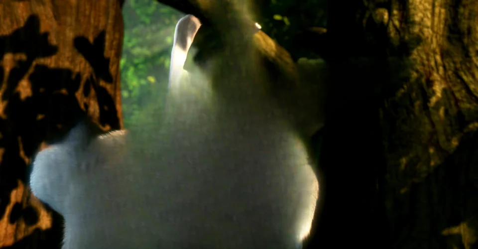

Filmes e séries
Sua coleção inteira em 3D, numa tela de cinema só sua.
Filmes, séries, a viagem do ano passado, o aniversário da família, o YouTube, seus jogos. O Pop3D transforma tudo o que passa no seu computador em 3D de verdade, direto no seu óculos VR. Na hora, sem converter nada.

Use o nosso app para o Quest, o jeito mais fácil, ou o programa de PC VR que você já usa.
Abra o app no óculos e ele encontra o seu computador sozinho, pelo Wi-Fi de casa. Sem cabo e sem configurar nada.
Prefere o que já usa? O Pop3D conversa com os principais jeitos de ligar o óculos ao PC.
Filmes são só o começo. Viagens, momentos em família, fotos, vídeos do YouTube e até o seu jogo favorito ganham profundidade.
Sua coleção inteira em 3D, numa tela de cinema só sua.
Seus jogos de PC em 3D no óculos, sem instalar mod nenhum.
Volte para aquela praia. Desta vez, com profundidade.
Aniversários, formaturas, o primeiro passo do bebê.
Abra uma foto no PC e entre nela.
Vlogs, documentários, clipes: o que estiver na tela do computador.
Paisagens com a profundidade que elas têm de verdade.
Arraste a linha. De um lado, a tela plana de sempre. Do outro, a mesma cena com o Pop3D. No óculos é ainda mais impressionante: cada olho recebe a sua própria imagem.
O Pop3D faz a mágica no computador e mostra no seu óculos. Instale no PC primeiro; o app do Quest é o jeito mais fácil de assistir.
Baixe, clique em Avançar e pronto. Ele se prepara sozinho para a sua placa de vídeo e se atualiza sozinho depois.
Baixar grátis para WindowsEnquanto o app não chega à loja, você já pode instalar pelo cabo USB:
Um computador com placa de vídeo NVIDIA RTX e um óculos VR. Só isso.
Sim. Sem propaganda, sem assinatura e sem pegadinha.
Não. É só dar play: o 3D acontece enquanto você assiste.
Não é obrigatório. O app Pop3D para Quest é o jeito mais fácil: chega em breve à loja da Meta, e já dá para instalar pelo modo desenvolvedor. Se preferir, o Pop3D também funciona com Steam Link, Air Link, Virtual Desktop e SteamVR.
O app do Quest mostra o que o Pop3D do computador prepara. Instale também o Pop3D no seu PC com Windows: com os dois abertos, o óculos encontra o computador sozinho.
Na primeira vez, o Pop3D baixa cerca de 4 GB: é a inteligência artificial que faz a mágica acontecer, e ela já fica pronta para a sua placa de vídeo. O tempo depende da sua internet. Depois disso, o app abre em segundos e se atualiza sozinho.
Funciona com o que aparece na tela do seu computador, como o YouTube e a maioria dos sites. Alguns serviços pagos protegem o vídeo contra cópia e não deixam nenhum programa capturar a imagem. Vídeos do seu computador funcionam direto.
Por enquanto, a mágica precisa de uma placa de vídeo NVIDIA RTX. Se o seu PC não tiver, o instalador avisa logo no começo, antes de baixar qualquer coisa.
Nunca. Tudo acontece no seu computador e o vídeo vai direto para o óculos pela sua rede de casa. O Pop3D envia só estatísticas anônimas de uso para ficar cada vez melhor, e dá para desligar nos Ajustes. Veja a Política de Privacidade.
É o aviso padrão do Windows para programas novos, que a Microsoft ainda não conhece. Clique em Mais informações e depois em Executar assim mesmo.
Que ótimo! Dentro do app, em Ideias e sugestões, você manda direto para a gente. O Pop3D é novinho e cresce junto com quem usa.
Grátis. Se instala sozinho. Funciona no seu óculos.